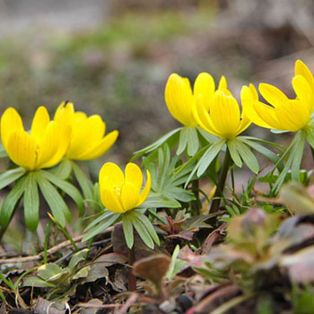
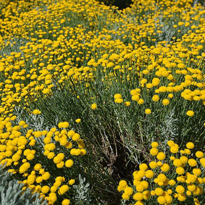
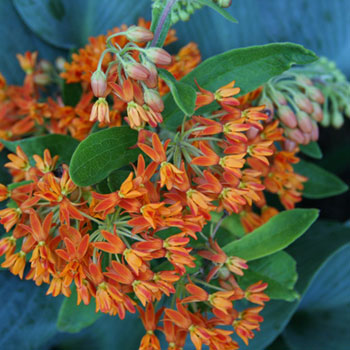
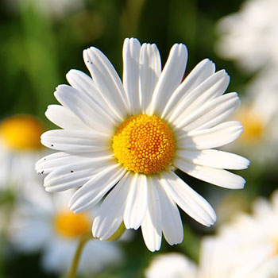
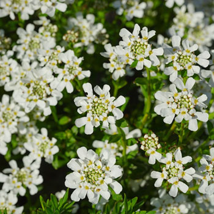
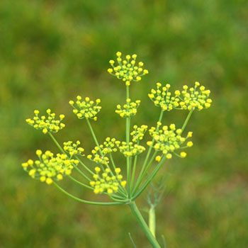

AconitiumAconites are one of the first bulb flowers to bloom in the spring and are known for their cheerful yellow color. Plant Aconites in a large group together and you'll be able to smell their sweet, honey-like fragrance |

Basket of GoldWith bright yellow, low-growing flowers, no wonder where the Basket of Gold got its name. Given its short height and golden color, this makes for a perfect addition to a rock garden or xeriscape. |

Butterfly WeedThe aptly named Butterfly Weed is a favorite among butterflies, but also bees and other beneficial insects. Propagation may take some time, but once the Butterfly Weed starts growing this hardy plant can endure full sun and a variety of soil types. |
|---|---|---|

DaisyThe iconic, playful daisy is most recognized for its bright yellow center and white petals. Daisies are easy to grow and not fussy when it comes to soil types, although it does thrive in full sun. |

Evergreen CandytuftKnow for its small, cloud-like blooms, this sun-loving flower makes for a great addition to rock gardens. Often cascading over rocks or walls, the Evergreen Candytuft is ideal for a filler in containers or to act as a border. |

FennelWhen not harvested, this edible perennial herb can grow up to 6 feet tall and feature dark foliage. It also attracts beneficial insects, including swallowtail butterflies. |